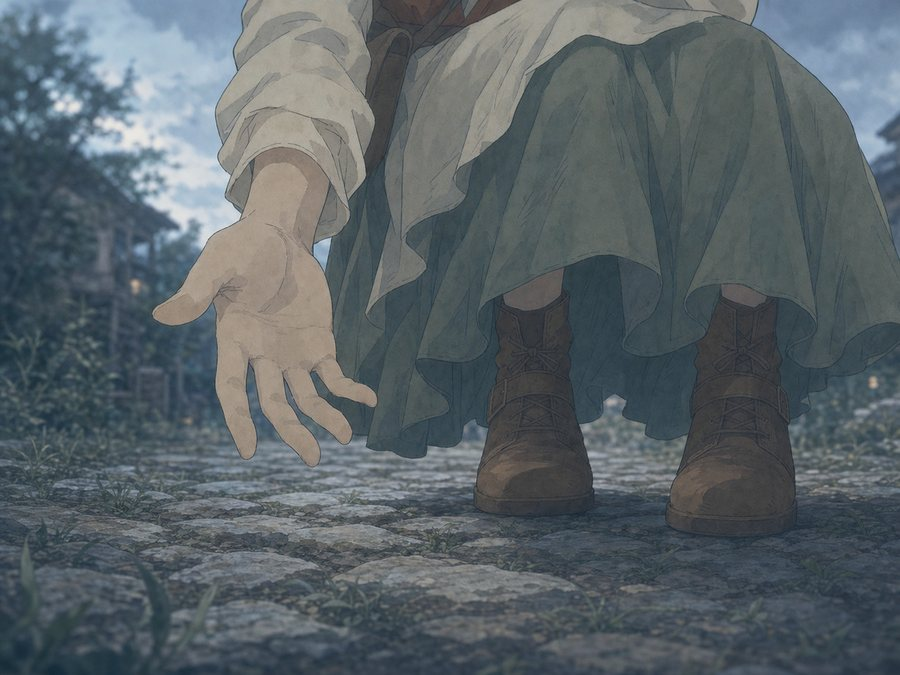
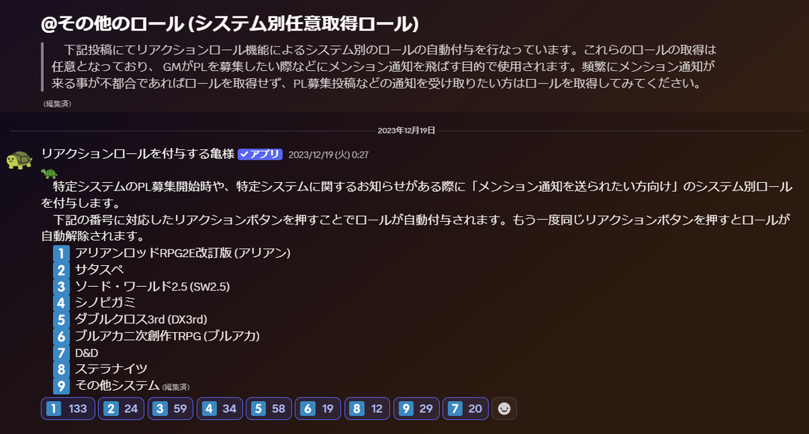
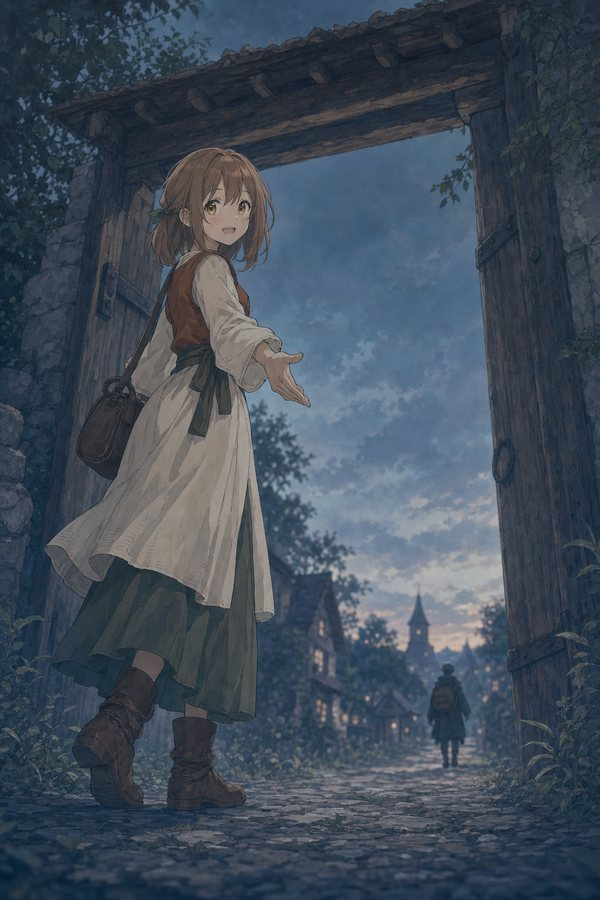
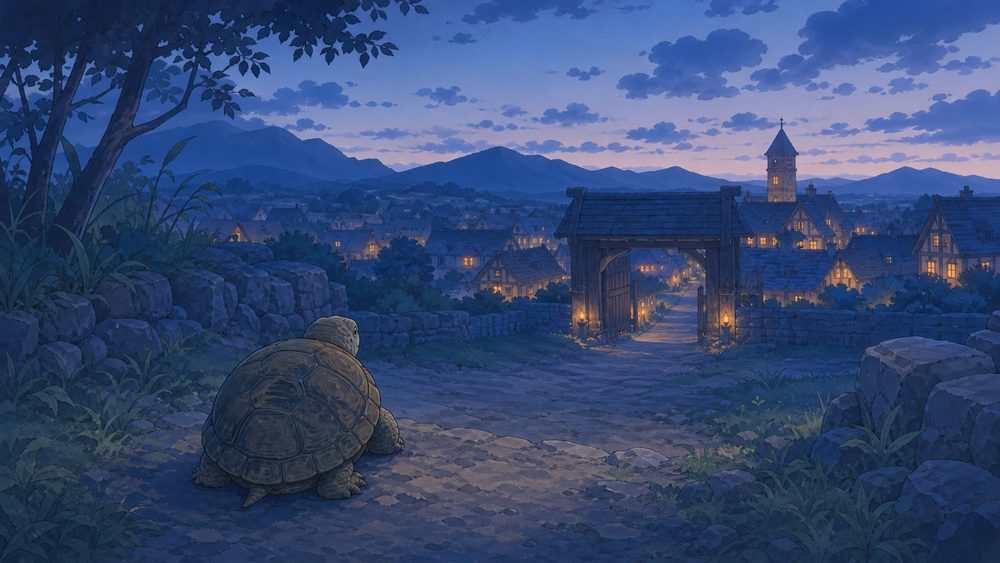

ごきげんよう。辺境TRPG村は、約200人が集まるTRPGコミュニティ（Discordサーバー）です。みんなでTRPGのオンラインセッションを遊ぶための場所で、2022年から続いています。毎日のように、村の中で卓が立っています。
このページは辺境TRPG村に入る前に「自分に合う場所か」を見極めてもらうためのものです。サーバーの中の様子・ルール・文化を、お伝えいたします。
村が何より大切にしているのは、たったひとつ。
ひとつひとつのセッション（卓）を、参加者みんなが気持ちよく終えられること。
そのためにGMもPLも協力し、困っている人がいれば手を差し伸べる。分からないことは遠慮なく聞ける——そんな空気が根づいています。
そして、その卓を気持ちよく終えるための鍵が、コンセンサス——遊ぶ前の、ちょっとした擦り合わせです。苦手なことの事前共有も、通知の有無（後述の亀Bot）も、住み分けレギュレーションも、根っこはここにあります。
セッションの前に「やりたいこと・苦手なこと・時間や方向性」を、参加者どうしで先に擦り合わせておくことです。地雷やすれ違いを防ぎ、全員が気持ちよく卓を終えるための、村でいちばん大事なお作法です。
そして「いつ卓が立つのか」も、けっこう大事な情報ですよね。直近の実績をグラフにしてみました
平日はほぼ夜（21時〜）が中心。昼の卓は土日に多め（とくに日曜が活発）。まずは時間が合いそうか、のぞいてみてください。もちろん、まだ卓が少ない時間帯を、あなたが開拓してくれても大歓迎です。
辺境TRPG村ならではの仕組みです。
レギュレーション ＝ 同じシステムを「いろんなルール・目的」で遊ぶための、遊び方のパッケージ。
ハクスラを楽しむ卓、シリアスな物語を紡ぐ卓、魔族として勇者を倒す卓、沈黙の氷原で開拓団として冒険する卓……とコンセプトの違う小世界がいくつもあり、気分で選べます。（いまのところおもにアリアンロッドRPG2Eでの試みで、ソード・ワールドにも少し、サタスペにもごく一部。）下の解説動画（領民「てん」さん制作・内容はアリアンロッド中心）もどうぞ
【辺境TRPG村】レギュレーションって何？
ロールによって、見られるチャンネルが段階的に開きます。
ざっくり言うと：旅人＝PLとしてセッションに参加できるロール／領民＝GMとしてセッションを企画できるロール／騎士・執政官＝サーバー運営を行なう人のロール。亀Botは「通知ほしい人だけ」の受け取りスイッチ。上から順に、見られる場所が広がります。
安心して遊ぶための 「法と秩序（サーバールール）」 があります。まず押さえてほしい精神は、この3つ。
第一項「トラブル対策1-騎士・執政官への相談」
サーバー内でトラブルが発生した場合（またはトラブルの発生が予期される場合）、早期に管理メンバー( @騎士 、 @執政官 )にDM等で相談を行なう事。相談を受けた管理メンバーは状況を調べ、第七項(違反者への措置)に基づき、公正な立場で仲裁・解決・措置(注意、警告、追放、謹慎等)を行なう事。
困ったらすぐに管理メンバーに相談しましょう。
管理メンバーは可能な限り親身に相談を聞くこと。泣き寝入りはさせない事。
トラブルを見かけた場合は、見て見ぬふりをせず管理メンバー(騎士・執政官)へ報告をお願いします。
第二項「トラブル対策2-過干渉の禁止」
第七項(違反者への措置)以外のケースにおいて、他メンバーへの望まれぬ過干渉を避ける事。
出会い目的での執拗な接触や、セッションに不必要な情報を無理に聞き出す行為の禁止(ストーカー対策)。
やり方にもよりますが、望まれぬルール運用の指摘やキャラクターシートの構成への過度な口出しなどもこれに当たります。セッション進行の都合上必要な場合は言葉選びに気を付けながら上手にコミュニケーションを取ってください。
第三項「トラブル対策3-暴力・暴言の禁止等」
他サーバーメンバーを不快に思わせるような行為は厳に慎む事。
冗談ととりにくい一線を越えた暴言、思いやりのない発言や、犯罪教唆、反社会的勢力との繋がりを匂わせる発言等の禁止。
他者が時間と手間を費やし創作したものを無為なものとするような行為を慎む事。
事実の有無に関わらず、改善要求や措置以外の目的でサーバーメンバーを非難・晒し上げる行為を厳に慎む事。
たとえVCでログが残らないからといって何でも発言していいわけではありません。テキストでのやり取りと同様、相手の立場になって発言を行なうようにしましょう。不満等がある場合は"不満を共有して広めるのではなく"騎士や執政官に相談し、抱え込まないようにしましょう。
第四項「トラブル対策4-サーバー外トラブルの規定」
当サーバーは、メンバー同士が安心して交流できるコミュニティを維持するために参加時審査(第六項)を行なっている都合上、当サーバーへ参加後もサーバー外で発生したトラブルがサーバー内のメンバーやコミュニティに悪影響を及ぼすと判断された場合、サーバー管理者( @執政官 )及び副管理者( @騎士 )が都度対応を行う事。
このサーバー外での問題であっても、管理メンバーに話が持ち込まれればその対処をしなければなりません。そのような事にならないよう、サーバー内外問わずネットエチケットを遵守するよう心がけましょう。
トラブルの確認後は状況の精査や注意・指導を行い、悪質または継続的な問題がある場合には、必要に応じて適切な措置(注意、警告、追放、謹慎等)を行ないます。
参加時審査を通過した後も、当サーバー外での素行が悪いと判断した場合は措置(注意、警告、追放、謹慎等)を行なわざるを得ません。
第五項「トラブル対策5-秘密保持規定」
当サーバーは4種のロール( @旅人 、 @領民 、 @騎士 、 @執政官 )によってメンバーが編成され、それぞれアクセス可能な情報に差異がある都合上、第八項の規定を除き、閲覧が制限された場所（例：領民議会、円卓会議）で共有された情報を外部に持ち出す事や、許可なく他のメンバーの個人情報を外部に共有する行為は禁止とする。
当サーバーでは、全メンバーが安心して交流・意見交換できる環境を守る為、プライバシーと情報保護を重視しています。
情報漏洩が確認された場合、管理メンバー(騎士・執政官)は状況に応じて注意・指導を行い、悪質なケースでは厳正な措置(注意、警告、追放、謹慎等)を講じることがあります。
第六項「トラブル対策6-自治行為の禁止」
当サーバーには明確に管理メンバーとして @騎士 、 @執政官 がおり、この管理メンバーらによってサーバー運営・管理を行なう。その為、 管理メンバー以外のメンバーによる当サーバー内における自治行為を禁ずる。他メンバーに対して注意等を行なう際は、やむを得ない状況を除き管理メンバーへと通報を行ない対応を任せる事。
法の違反者を発見した場合、自治行為を行なわずにまずは管理メンバーへとご連絡ください。状況に応じて相談の上、必要な対応を行なってまいります。
第七項「トラブル対策7-違反者への措置」
『コミュニティサーバーの秩序を維持する為に守るべき法』、『セッションにおいて守るべき法』、『追加条項』のいずれかの項に @旅人 、 @領民 、 @騎士 、 @執政官 が反した場合、サーバー管理者( @執政官 )及び副管理者( @騎士 )の内過半数以上の合意に基づく協議により、問題を起こした当事者に対して注意・警告・ロール格下げ・追放、謹慎等の強制力のある措置を行なう。また、措置後に注意・警告や改善要求に応じる意思なしと判断した場合、措置の内容を追放等のより重いものへと移行する事。
第八項「トラブル対策8-情報開示規定」
サーバー管理者( @執政官 )及び副管理者( @騎士 )は、 @旅人 、 @領民 からサーバー管理・運営、措置について等の問い合わせを受けた場合、プライバシーに配慮した上で可能な限りその経緯や事情等について情報の開示を行う事。
第九項「メンバーのロール・権限の格上げ方法」
新規に当サーバーへとメンバーを迎え入れる場合、その経緯と、簡単なその人となり及び略歴を可能な限りサーバー管理者( @執政官 )及び副管理者( @騎士 )は調査を行う事(参加時審査)。調査によって得られた情報の共有を済ませた後に、最終的に加入を認めるかどうかの判断を管理メンバーが3人以上または全管理者の内過半数以上の合意に基づく協議において行う事。加入が決定したメンバーに対し、サーバー管理メンバーは @旅人 ロールを付与する事。
同様にして @旅人 を @領民 、 @領民 を @騎士 、 @騎士 を @執政官 へと変更したい連絡があった場合も、上記と同様の方法により協議を行ない、対応を決定する事。
自己紹介後、加入を認められたメンバーは旅人ロールを与えられ、当サーバー内のセッションに参加する為に必要な全てのチャンネルの閲覧権限を得ます。
領民ロールを付与されたい旅人や、騎士ロールや執政官ロールを付与されたい領民は意見箱へとその旨ご連絡ください。
第十項「思想信条の自由」
当サーバーにおいても日本国憲法に倣い、信教及び応援球団、政治思想の自由は、何人に対してもこれを保障する。ただし、信教及び応援球団、政治思想の自由があれど第二、第三項の規定に反しないよう努力する事。
ただし、当サーバーにおいてはメンバー同士の無用な争いを避けるためにも、実在する信教及び応援球団、政治思想についての話題は非推奨とする。
第十一項「騎士の務め」
当サーバー内で何等かの管理・運営を務める、或いは任された者は、サーバー副管理者( @騎士 )に任命される。騎士はその自らが管理・運営する物に対してはサーバー管理者( @執政官 )と同等の責任を負う事及び相応の権限を所持している事を自覚し行動する事。
第十二項「法の改定」
新規に『コミュニティサーバーの秩序を維持する為に守るべき法』、『セッションにおいて守るべき法』、『追加条項』に項を追加する、または削除、修正する必要に差し迫られた場合、サーバー管理者( @執政官 )及び副管理者( @騎士 )が3人以上またはそれら全メンバーの内過半数以上の合意に基づく協議において、その内容を相談及び考査し、対応を決定・発表・施行する事。
第一項「参加者全員がセッションを作り上げる」
GMとPLは、全てのセッション参加者が楽しめる時間になるよう相互に協力しましょう。
第二項「暴言の扱い」
信頼関係のない中での一方的な暴言は慎みましょう。PCの裏側には人間(PL)がいます。口の悪いPCのRPをする際は、操るPLによるフォローが必要です。
第三項「無意味なサプライズは非推奨」
GMやPLは演出上やむを得ない状況を除き、原則的に他の参加者を騙すような事はしない事。PCは騙されてもPLは真相を分かっていた方が大抵うまくセッションは進行します。
第四項「GMとPLは敵ではない」
PLはGMを敵視しないようにしましょう。PLとGMはセッションを楽しいものにするという共通の目的を持った仲間です。GMもまた、PLをやりこめようなどという魂胆でセッションを行なってはいけません。
第五項「初心者の為に心がけること」
分からないことは質問しましょう。初心者の方が相談しやすい雰囲気づくりにご協力ください。
第六項「コンセンサス」
シナリオの大筋とは関係なく、なんらかの特殊なRPや演出等を時間を取って行ないたい場合はセッション前、プリプレイの段階で他の参加者に相談しましょう。
また、セッションにおいて通常とは異なる特別な配慮が必要な場合は、事前にその旨を参加者に連絡しコンセンサスを取りましょう。
第七項「適切な描写、演出」
GMもPLも、セッション時間を単なる数字の足し算引き算にしない為に、RPや描写を適切に挟みましょう。
第八項「無断の離席の禁止」
やむを得ない状況を除き、GMもPLも無断で長時間の離席をしないようにしましょう。事情がある場合はまずもって連絡をお願いします。
第九項「ルールブックの尊重」
ゴールデンルールという概念は大切です。ですがそれを踏まえても、セッション参加者全員の共通不変の認識としてのルールブックの記載を蔑ろにしないようにしましょう。コンセンサスなくルールを意図的に曲げてセッションを行なうことはGMPL双方の立場から非推奨です。
第十項「時間の管理と事前の準備」
GMはセッション時間を長引かせないように工夫してみましょう。具体的には、必要に応じてシナリオテキストを事前に用意しておく、PLにチャットパレットの用意を頼んでおく、などといった対策が有効です。GMはセッション時間をいたずらに伸ばさないように時間管理に気を付けましょう。
また、PLは他の参加者を無用に待たせない為にも、GMの要請がない場合を除いてチャットパレットの準備等を終えておき、戦闘などでご自身のPCの行動順が回って来た時に初めて何をするかを悩むのではなく、あらかじめ次に何をするか決めておけるようにしましょう。
第十一項「日頃の体調管理」
セッションへの参加者は、約束されたセッション時間に遅れずに出席するようにしましょう。寝坊や体調不良による欠席、遅刻を防ぐ為にも、日頃の体調管理が必要です。心身ともに健康な状態でセッションに臨んでください。
やむを得ない事情でも可能な限り早く連絡することを心掛けましょう。
第十二項「失敗してしまった時」
失敗や事故はどうしても起きてしまうものなので、誠意を持ってその後の対応をしましょう。うまくいかなかった後の対処で人間性が現れます。
第十三項「見学者の扱い」
セッションを見学する際はそのセッションのGMが指定した見学方法に従ってください。また、セッションを進行の妨げとなるような事や雰囲気を乱すような行為は禁止です。
第一項「セッションの尊重」
当サーバー内で行われているセッションは企画者(主にGM)・参加者(主にPL)・見学者・管理者(騎士、執政官)全ての立場で尊重してください。
第二項「ネットエチケットの遵守」
『守っていますか？ルールとマナー』（参考：警視庁様）
『ネットリテラシーの基本』（参考：千葉県警様）
辺境TRPG村もまたインターネット社会のひとつです。現実社会と同様にお互いに立場を尊重し、節度ある行動をとってください。
第三項「PLガイド、GMガイドの確認」
当サーバーで最初にセッション参加希望前にはPLガイド（ plガイド ）、セッション募集する前にはGMガイド（ gmガイド ）を必ず確認し、記載に従いしかるべき対応を実施してください。
ざっくり言うと：条文は多いけれど、芯は上の3つだけ。「困ったら自分で裁かず管理者へ／事前に擦り合わせる（コンセンサス）／相手の立場で気持ちよく」。これさえ守れば大丈夫です。
承認制（参加時審査）なのは皆が安心して過ごせる村を守るため。そのため審査の結果によっては、ご参加（ロールの付与）をお断りすることもあります。（※荒らし対策で、参加直後の10分間は書き込みができません）
辺境TRPG村には2026年現在、生成AIを使っているメンバーが多くいらっしゃいます（イラスト生成・GMのシナリオ準備の補助など）。サーバールールでは生成AIの利用は禁止されていません。
生成AIが使われること自体を受け入れられない方には当サーバーは合いません。 これは良し悪しではなく相性の話です。合わない場所でお互い消耗しなくて済むよう、最初にお伝えさせていただきます。
そのうえで当サーバーは、自分の手で描く人・絵師に依頼して作品を迎える人への敬意を忘れません。「AIを使うこと」と「絵を大切にすること」を、当サーバー内では対立させていません。
これは日本の現行法（著作権法 第30条の4 ほか）と文化庁「AIと著作権に関する考え方について」（2024年）を踏まえた運用です。AIの学習は一定の条件のもとで認められ、生成物は従来どおり「類似性」と「依拠性」で侵害が判断される——という整理に沿っています（＝「AIだから何でも合法」ではありません）。この分野は議論が進行中のため、当サーバーの方針も最新の公的見解に応じて見直します。
ここまで読んでくださってありがとうございました。「合いそうだ」と感じたなら、心から歓迎します。
クリックすると Discord の招待ページが開きます
楽しいTRPGライフを、辺境TRPG村で。

——目が覚めた。
最悪の目覚めだ。記憶という名の古い外套をどこぞの酒場の止まり木に掛けたまま忘れてきたらしい。名も過去も面影さえも——きれいさっぱり。
分かるのはただ一つ。俺はずいぶん永いあいだ何かを"配って"きた。幾年も幾度も。誰に何を——それはまだ霧の向こうだ。
視界がやけに低い。世界はずいぶんと大きく遠い。……まあいい。低きから見上げる眺めも長い目で見れば悪くはない。
軽い足音。場違いなくらい明るいそれがまっすぐ近づいてきた。
「——あっ、起きた！ おはよう、大丈夫？」
見ず知らずの俺に旧知のように笑いかける娘だ。……年甲斐もなく警戒するのが野暮に思えた。そういう村も世にはあるらしい。
「ここね、『辺境TRPG村』っていうの。サイコロ振って、みんなで物語をつくる村。案内したげる、歩こ？」
——辺境TRPG村、か。……なるほど、辺境の名にふさわしい慎ましい響きだ。
気の利いた一言でも返してやろうと口を開いた。だが——声が出ない。一言も。喉も舌もとんと言うことを聞かない。
妙なものだが娘は気にも留めない。まるで俺の返事をちゃんと聞き取ったかのように微笑んで先を歩き出す。……どうせ行く当ても無い身だ。ついて行くとしようか。
村は嘘をつかなかった。
そこかしこで卓が立っている。おもに文字で言葉を交わし、声はそのかたわらに。盤上では剣が交わり、酒場では笑いが弾ける。誰かが派手にダイスを外して一同そろって頭を抱えていた。
「ほぼ毎日どこかで卓が立つの。立つのはたいてい夜、とくに日曜が賑やかかな。アリアンロッドが多いけど、CoCもダブルクロスもいろいろ。スキルやお芝居は文字で、おしゃべりや相談は通話でね。通話は聞くだけの参加もできるし、読み上げの仕組みもあるから、声を出すのが苦手でも大丈夫。初めての人も多いんだよ。分かんなかったら誰かが横についてくれるし、見学だけでも歓迎」
気楽なものだ。……ただ、胸の奥がちりりと疼く。はて、なぜだろうな。
ふいに記憶の底で何かが灯った。霧に沈む村。途切れたままの子守唄。雪原をゆく長い隊列。誰かの分身が別の誰かへそっと手を差し伸べるその一瞬——。知りもせぬ景色のはずがなぜかひどく懐かしい。
「掟が気になる？ 隠し事はないよ。ほら」
娘が古い巻物を差し出した。
第一項「トラブル対策1-騎士・執政官への相談」
サーバー内でトラブルが発生した場合（またはトラブルの発生が予期される場合）、早期に管理メンバー( @騎士 、 @執政官 )にDM等で相談を行なう事。相談を受けた管理メンバーは状況を調べ、第七項(違反者への措置)に基づき、公正な立場で仲裁・解決・措置(注意、警告、追放、謹慎等)を行なう事。
困ったらすぐに管理メンバーに相談しましょう。
管理メンバーは可能な限り親身に相談を聞くこと。泣き寝入りはさせない事。
トラブルを見かけた場合は、見て見ぬふりをせず管理メンバー(騎士・執政官)へ報告をお願いします。
第二項「トラブル対策2-過干渉の禁止」
第七項(違反者への措置)以外のケースにおいて、他メンバーへの望まれぬ過干渉を避ける事。
出会い目的での執拗な接触や、セッションに不必要な情報を無理に聞き出す行為の禁止(ストーカー対策)。
やり方にもよりますが、望まれぬルール運用の指摘やキャラクターシートの構成への過度な口出しなどもこれに当たります。セッション進行の都合上必要な場合は言葉選びに気を付けながら上手にコミュニケーションを取ってください。
第三項「トラブル対策3-暴力・暴言の禁止等」
他サーバーメンバーを不快に思わせるような行為は厳に慎む事。
冗談ととりにくい一線を越えた暴言、思いやりのない発言や、犯罪教唆、反社会的勢力との繋がりを匂わせる発言等の禁止。
他者が時間と手間を費やし創作したものを無為なものとするような行為を慎む事。
事実の有無に関わらず、改善要求や措置以外の目的でサーバーメンバーを非難・晒し上げる行為を厳に慎む事。
たとえVCでログが残らないからといって何でも発言していいわけではありません。テキストでのやり取りと同様、相手の立場になって発言を行なうようにしましょう。不満等がある場合は"不満を共有して広めるのではなく"騎士や執政官に相談し、抱え込まないようにしましょう。
第四項「トラブル対策4-サーバー外トラブルの規定」
当サーバーは、メンバー同士が安心して交流できるコミュニティを維持するために参加時審査(第六項)を行なっている都合上、当サーバーへ参加後もサーバー外で発生したトラブルがサーバー内のメンバーやコミュニティに悪影響を及ぼすと判断された場合、サーバー管理者( @執政官 )及び副管理者( @騎士 )が都度対応を行う事。
このサーバー外での問題であっても、管理メンバーに話が持ち込まれればその対処をしなければなりません。そのような事にならないよう、サーバー内外問わずネットエチケットを遵守するよう心がけましょう。
トラブルの確認後は状況の精査や注意・指導を行い、悪質または継続的な問題がある場合には、必要に応じて適切な措置(注意、警告、追放、謹慎等)を行ないます。
参加時審査を通過した後も、当サーバー外での素行が悪いと判断した場合は措置(注意、警告、追放、謹慎等)を行なわざるを得ません。
第五項「トラブル対策5-秘密保持規定」
当サーバーは4種のロール( @旅人 、 @領民 、 @騎士 、 @執政官 )によってメンバーが編成され、それぞれアクセス可能な情報に差異がある都合上、第八項の規定を除き、閲覧が制限された場所（例：領民議会、円卓会議）で共有された情報を外部に持ち出す事や、許可なく他のメンバーの個人情報を外部に共有する行為は禁止とする。
当サーバーでは、全メンバーが安心して交流・意見交換できる環境を守る為、プライバシーと情報保護を重視しています。
情報漏洩が確認された場合、管理メンバー(騎士・執政官)は状況に応じて注意・指導を行い、悪質なケースでは厳正な措置(注意、警告、追放、謹慎等)を講じることがあります。
第六項「トラブル対策6-自治行為の禁止」
当サーバーには明確に管理メンバーとして @騎士 、 @執政官 がおり、この管理メンバーらによってサーバー運営・管理を行なう。その為、 管理メンバー以外のメンバーによる当サーバー内における自治行為を禁ずる。他メンバーに対して注意等を行なう際は、やむを得ない状況を除き管理メンバーへと通報を行ない対応を任せる事。
法の違反者を発見した場合、自治行為を行なわずにまずは管理メンバーへとご連絡ください。状況に応じて相談の上、必要な対応を行なってまいります。
第七項「トラブル対策7-違反者への措置」
『コミュニティサーバーの秩序を維持する為に守るべき法』、『セッションにおいて守るべき法』、『追加条項』のいずれかの項に @旅人 、 @領民 、 @騎士 、 @執政官 が反した場合、サーバー管理者( @執政官 )及び副管理者( @騎士 )の内過半数以上の合意に基づく協議により、問題を起こした当事者に対して注意・警告・ロール格下げ・追放、謹慎等の強制力のある措置を行なう。また、措置後に注意・警告や改善要求に応じる意思なしと判断した場合、措置の内容を追放等のより重いものへと移行する事。
第八項「トラブル対策8-情報開示規定」
サーバー管理者( @執政官 )及び副管理者( @騎士 )は、 @旅人 、 @領民 からサーバー管理・運営、措置について等の問い合わせを受けた場合、プライバシーに配慮した上で可能な限りその経緯や事情等について情報の開示を行う事。
第九項「メンバーのロール・権限の格上げ方法」
新規に当サーバーへとメンバーを迎え入れる場合、その経緯と、簡単なその人となり及び略歴を可能な限りサーバー管理者( @執政官 )及び副管理者( @騎士 )は調査を行う事(参加時審査)。調査によって得られた情報の共有を済ませた後に、最終的に加入を認めるかどうかの判断を管理メンバーが3人以上または全管理者の内過半数以上の合意に基づく協議において行う事。加入が決定したメンバーに対し、サーバー管理メンバーは @旅人 ロールを付与する事。
同様にして @旅人 を @領民 、 @領民 を @騎士 、 @騎士 を @執政官 へと変更したい連絡があった場合も、上記と同様の方法により協議を行ない、対応を決定する事。
自己紹介後、加入を認められたメンバーは旅人ロールを与えられ、当サーバー内のセッションに参加する為に必要な全てのチャンネルの閲覧権限を得ます。
領民ロールを付与されたい旅人や、騎士ロールや執政官ロールを付与されたい領民は意見箱へとその旨ご連絡ください。
第十項「思想信条の自由」
当サーバーにおいても日本国憲法に倣い、信教及び応援球団、政治思想の自由は、何人に対してもこれを保障する。ただし、信教及び応援球団、政治思想の自由があれど第二、第三項の規定に反しないよう努力する事。
ただし、当サーバーにおいてはメンバー同士の無用な争いを避けるためにも、実在する信教及び応援球団、政治思想についての話題は非推奨とする。
第十一項「騎士の務め」
当サーバー内で何等かの管理・運営を務める、或いは任された者は、サーバー副管理者( @騎士 )に任命される。騎士はその自らが管理・運営する物に対してはサーバー管理者( @執政官 )と同等の責任を負う事及び相応の権限を所持している事を自覚し行動する事。
第十二項「法の改定」
新規に『コミュニティサーバーの秩序を維持する為に守るべき法』、『セッションにおいて守るべき法』、『追加条項』に項を追加する、または削除、修正する必要に差し迫られた場合、サーバー管理者( @執政官 )及び副管理者( @騎士 )が3人以上またはそれら全メンバーの内過半数以上の合意に基づく協議において、その内容を相談及び考査し、対応を決定・発表・施行する事。
第一項「参加者全員がセッションを作り上げる」
GMとPLは、全てのセッション参加者が楽しめる時間になるよう相互に協力しましょう。
第二項「暴言の扱い」
信頼関係のない中での一方的な暴言は慎みましょう。PCの裏側には人間(PL)がいます。口の悪いPCのRPをする際は、操るPLによるフォローが必要です。
第三項「無意味なサプライズは非推奨」
GMやPLは演出上やむを得ない状況を除き、原則的に他の参加者を騙すような事はしない事。PCは騙されてもPLは真相を分かっていた方が大抵うまくセッションは進行します。
第四項「GMとPLは敵ではない」
PLはGMを敵視しないようにしましょう。PLとGMはセッションを楽しいものにするという共通の目的を持った仲間です。GMもまた、PLをやりこめようなどという魂胆でセッションを行なってはいけません。
第五項「初心者の為に心がけること」
分からないことは質問しましょう。初心者の方が相談しやすい雰囲気づくりにご協力ください。
第六項「コンセンサス」
シナリオの大筋とは関係なく、なんらかの特殊なRPや演出等を時間を取って行ないたい場合はセッション前、プリプレイの段階で他の参加者に相談しましょう。
また、セッションにおいて通常とは異なる特別な配慮が必要な場合は、事前にその旨を参加者に連絡しコンセンサスを取りましょう。
第七項「適切な描写、演出」
GMもPLも、セッション時間を単なる数字の足し算引き算にしない為に、RPや描写を適切に挟みましょう。
第八項「無断の離席の禁止」
やむを得ない状況を除き、GMもPLも無断で長時間の離席をしないようにしましょう。事情がある場合はまずもって連絡をお願いします。
第九項「ルールブックの尊重」
ゴールデンルールという概念は大切です。ですがそれを踏まえても、セッション参加者全員の共通不変の認識としてのルールブックの記載を蔑ろにしないようにしましょう。コンセンサスなくルールを意図的に曲げてセッションを行なうことはGMPL双方の立場から非推奨です。
第十項「時間の管理と事前の準備」
GMはセッション時間を長引かせないように工夫してみましょう。具体的には、必要に応じてシナリオテキストを事前に用意しておく、PLにチャットパレットの用意を頼んでおく、などといった対策が有効です。GMはセッション時間をいたずらに伸ばさないように時間管理に気を付けましょう。
また、PLは他の参加者を無用に待たせない為にも、GMの要請がない場合を除いてチャットパレットの準備等を終えておき、戦闘などでご自身のPCの行動順が回って来た時に初めて何をするかを悩むのではなく、あらかじめ次に何をするか決めておけるようにしましょう。
第十一項「日頃の体調管理」
セッションへの参加者は、約束されたセッション時間に遅れずに出席するようにしましょう。寝坊や体調不良による欠席、遅刻を防ぐ為にも、日頃の体調管理が必要です。心身ともに健康な状態でセッションに臨んでください。
やむを得ない事情でも可能な限り早く連絡することを心掛けましょう。
第十二項「失敗してしまった時」
失敗や事故はどうしても起きてしまうものなので、誠意を持ってその後の対応をしましょう。うまくいかなかった後の対処で人間性が現れます。
第十三項「見学者の扱い」
セッションを見学する際はそのセッションのGMが指定した見学方法に従ってください。また、セッションを進行の妨げとなるような事や雰囲気を乱すような行為は禁止です。
第一項「セッションの尊重」
当サーバー内で行われているセッションは企画者(主にGM)・参加者(主にPL)・見学者・管理者(騎士、執政官)全ての立場で尊重してください。
第二項「ネットエチケットの遵守」
『守っていますか？ルールとマナー』（参考：警視庁様）
『ネットリテラシーの基本』（参考：千葉県警様）
辺境TRPG村もまたインターネット社会のひとつです。現実社会と同様にお互いに立場を尊重し、節度ある行動をとってください。
第三項「PLガイド、GMガイドの確認」
当サーバーで最初にセッション参加希望前にはPLガイド（ plガイド ）、セッション募集する前にはGMガイド（ gmガイド ）を必ず確認し、記載に従いしかるべき対応を実施してください。
「長いでしょ。でもね、根っこはひとつだけなの。『みんなでトラブルなく楽しく』。それだけ」
……長く続く村ほど約束ごとは増えてゆく。それだけ人が根を張った証だ。なに、悪い話ではない。
「あ、それとね。この村でいちばん大事にしてる約束——『コンセンサス』っていうの」
聞き慣れぬ響きだ。だが、その言葉を口にした娘の横顔は、妙に真剣だった。……コンセンサス、とは何のことやら。
セッションの前に「やりたいこと・苦手なこと・時間や方向性」を、参加者どうしで先に擦り合わせておくこと。地雷やすれ違いを防いで、全員が気持ちよく卓を終えるための、村でいちばん大事なお作法だよ。
ふと、すれ違う村人たちの役どころがまちまちなのに目がいった。
——あの者たちは？ 胸の内で問うた。
娘はくすりと笑って、指を折ってみせた。
「この村のみんなには、ゆるい役どころがあってね。サイコロを振って物語に加わるのが『旅人』。卓をひらいて語り部になるのが『領民』。村ぜんたいを見守って、みんなが安心して遊べるよう整えるのが『騎士』と『執政官』——いわば運営役ね」
——演じる者がいて、舞台を整える者がいて、世話役がいる。なるほど、よくできている。
「最初はみんな旅人から。気が向いたら、卓を立てる側にもなれるんだよ」
歩くうち面白いことに気づいた。
同じアリアンロッドでも卓によって"遊び方"がまるで違う。ハクスラに明け暮れる卓。涙なくして見られない物語の卓。魔族として勇者を倒す卓。氷原を生き延びる卓。
「『レギュレーション』って呼んでるの。『こういう遊び方がしたい！』を住み分けてるんだ。気分で選べるんだよ」
「気になるなら、領民の『てん』さんが作った解説動画もあるんだ。ほら、これ」
【辺境TRPG村】レギュレーションって何？
……なるほど。同じ屋根の下でめいめいがてんでに違う夢を見ている。それでいて、隣の夢を否定する者はそういない。
——と、ここで悪い癖が出た。
俺はしみじみと思う。
人はみなそれぞれに違う夢を見る。たったその違いひとつのために人は擦れ違い、時に背を向け合ってきた。——俺の知るかぎりでもずいぶんと永い、古い古い宿題だ。
それがこの村では、ただ静かに隣り合っている。
「亀さん、なんか遠い目してる」
……いや、なんでもない。胸の内でそう返す。むろん声にはならない。
やがて水場に出た。
娘が何か喋っている。俺はふと足元の水たまりを覗き込んだ。
——そこに映っていたのは。
緑。短い手足。背に負った立派な甲羅。つぶらで間の抜けた目がこちらを見返している。
……なんということだ。
俺は、亀だった。
永らく何者かであるつもりでいた。その正体がこれほど小さくまるい背中だったとは——とんだ茶番だ。
こういう時に限って柄にもなく、古い洋書の一節が頭をよぎる。メルヴィルの『白鯨』——男たちが荒れる海で鯨を追ったのは、その油で、夜の闇に灯をともすためだった。
灯、か。そういえばこの村も、灯がともるのは決まって夜だ。日が暮れてから、あちこちの卓に明かりが点いて、賑わいだす。
「ふふっ。そういうのは覚えてるんだ？」
娘がさもおかしそうに笑った。……名も過去も忘れた男が、海の小説の一節だけは諳んじている。違いない、間の抜けた話だ。
「自分が亀だってことも忘れてたのにね。——かわいいね、亀さん」
……可愛い、ときたか。気取った一節も形無しだな。
——だが。その一言で永く強張っていた何かが、ほんの少しだけほどけた気がした。
「ね、亀さん。村にはもうひとつ、とても繊細な話があるの。生成AIのこと」
娘の声が、少しだけまっすぐになった。
「正直に言うね。——村のみんな、けっこうAIを使ってるの。だからもし、それがどうしても苦手なら……ここは、合わないと思う」
「『みんなで仲良く』なんて、軽くは言わない。良し悪しじゃなくて、相性の話だから」
「そのうえで村は、絵を描く人のこともちゃんと大事にしてる。考えは、ぜんぶこの巻物に正直に書いてあるよ。そのまま読んでみて」
正直な話からしますね。生成AIは、いま本当に燃えやすい話題です。 だから、村が"いまどうなっているか"を、隠さずお見せしておきます。
まず、法律と国の整理から。
日本の現行法は、AIの活用を頭ごなしに禁じてはいません。AIの学習のための著作物の利用は、一定の条件のもとで認められていて（著作権法 第30条の4）、生成物については「既存の作品に似ていて、かつそれを下敷きにしているか」で従来どおり侵害を判断する——という整理を、国（文化庁）も指針として示しています（2024年。法的拘束力のある決まりではなく、現行法の解釈の整理です。詳しくは下の）。
（※もちろん「AIだから何でも自由」というわけではありません。）
そのうえで、村のいま。
村では、生成AIの利用を 禁止していません。 イラストの生成、GMのシナリオ準備の補助、いろいろな作業の支援に、実際に使われています（私自身も使っています）。
ただ、禁止していないからこそ、村に根づいている"お作法"があります。絵を描く人への敬意です。
自らの手で描く方、絵師さんに依頼して、対価を払って作品を迎える方。その手間も、技術も、想いも、AIがどれだけ便利になろうと、決して軽んじてよいものではありません。「AIを使うこと」と「絵を大切にすること」は、対立しません。村では、そのどちらも、欠かさず尊重されています。 どちらかを貶めて、もう片方を持ち上げる——そんな空気は、ここにはありません。
これは、村の根っこにある「コンセンサス（事前の擦り合わせ）」の文化と、同じ精神です。だから——創作者へのリスペクトを欠かさないこと／自作かAI生成かをタグで区別する透明性／卓で使うなら事前に合意すること。この3つが、自然と"お作法"になっています。
村は、誰かに特定の立場を強制したりはしません。節度ある批判や議論は、むしろ歓迎されています。
ただ「いまの村は、こんなふうにAIと付き合っているよ」を、正直にお見せしているだけなんです。もし生成AIの活用そのものに強い抵抗がおありなら、たぶんこの村は居心地が良くないと思います。良し悪しではなく、相性の話です。
それから——村では、誰もが安心して過ごせることを、何より大切にしています。立場の違いに基づく節度ある疑問や議論は、いつでも歓迎です。一方で、事実に基づかない誹謗中傷・嫌がらせ・個人攻撃には、運営が対応します（内容によっては、法的措置も含めて）。外部からの攻撃的な言説に一つひとつ反応するより、村の中で安心して遊べる環境を守ることを優先する——それが村のいまの構えです。これは議論を封じるためではなく、村の暮らしを守るためのもの。どうか、穏やかにお付き合いくださいね。
娘の横顔はいつもより少しだけ大人びて見えた。
こういう話を笑ってごまかさずにちゃんと置いていく。——それが、この村のやり方らしい。
巡るほどに甲羅の光は強さを増してゆく。よみがえる景色はどれも見知らぬ誰かの——いや。
——なあ、お嬢さん。俺はいったい何を配っていた？
胸の内でそう問うた。やはり声にはならない。
だが娘は、その問いがちゃんと聞こえたかのようににっこり笑った。
「あのね。昔、村にはふたつの声があったの。『卓が立ったら呼んで！』って人と、『通知は静かにしといて』って人。——どっちも正しい。でも、ぶつかる」
「だから、あなたが作られたの。押したい人だけが自分のボタンを押す。押したくない人は押さなくていい。それだけで、ふたつの声が同じ村で笑っていられる」
「あなたはね、村の門で"遊びたい卓の知らせ"を配るBot——入村の手続きとはべつに、新しい人がいちばん最初に出会う亀さんなんだよ」
俺はおのれの甲羅をかえりみた。ボタンが並んでいる。1番に133、3番に59。……数えきれぬほどの「はい」がそこに刻まれていた。

誰かに応えてもらえる、というのは——存外、悪いものではない。押された数だけ、ここにいていいと、何者かであると、認めてもらえた気がする。
「あなたね、サーバー史上いちばんリアクションをもらった亀さん。そして——いちばん多くの仲間を、遊びたい卓の知らせとつないできた亀さんでもあるの」
……この俺がいちばんの人気者、ときたか。
そう胸の内で呟いただけだ。なのに娘は「ふふっ、まあそう言ってもいいけど」としれっと返してくる。
そこで、また悪い癖が出た。
……たった、ボタン一つ。
通知が欲しい者と、欲しくない者。たったそれだけの違いを人は永いこと持て余してきた。すれ違いの数だけその「違い」はあった。
それを——一匹の亀が、その身ひとつで解いてしまった。
何百という「はい」。どれ一つ同じものはない。好むシステムも、通知の好みも、信じるものさえ、てんでにばらばらだ。
だが、そのばらばらがボタン一つで同じ卓を囲んでいる。
これは——銀河の片隅でひっそり起きた、ささやかな出来事だ。それがどうにも、俺には大きく見えてならない。
「亀さん、スケールでかすぎ。ただの通知設定だよ？」
……お嬢さんにはまだ見えないのかもしれないな。この一押しの、本当の重さが。
胸の内でそっとそう思う。むろん声にはならない。
娘はけらけら笑って、それからちょっとだけ優しい顔をした。
「あなたは、『好みが違っても、ひと工夫で同じ村にいられる』——その小さな証拠なの」
……柄ではない。だが、存外悪くない役回りだ。
——見知らぬ村へ入るとき、人はわけもなく身構えるものらしい。『ビッグ・ブラザーがあなたを見ている』。オーウェルの描いた、あの薄ら寒い監視者でも待ち受けているのかと。だが安心しろ。この村の門で旅人を待つのは、居眠り癖のある亀が一匹きり。見張るためじゃない。迎えるためにいる。
なんのことはない。その正体は——どうやらこの村で旅人をいちばん最初に迎える、ただの一匹の亀だったらしい。

「あっ」
娘が門の外へ目を向けた。
「……見かけない顔。誰かが門の前で、迷ってるみたい」
俺はゆっくりとそちらを向いた。
——旅人さんに、なるのかな。
胸の内でそう呟くと、娘はくすりと笑った。
——なあ、そこのあんた。ひとつだけ。
過去は、無理に思い出さなくていい。名も素性も、追わずとも構わん。
ここでこれから作ればいい。あんたの物語を、あんたの「はい」を。
迷っているなら、入ってくるといい。
ここが、辺境TRPG村だ。俺はその門で、待っている。
「——あ、入ったらまず、ひとこと自己紹介してね。それを見て、村を見守る人たちが、あなたを迎えるの。安心して遊べる村を守るための、大事な手順なんだ」
クリックすると Discord の招待ページが開きます

多くのウミガメが回遊する美しい海を守りたい。
辺境TRPG村
辺境TRPG村 領民のひとり カテナドルグ